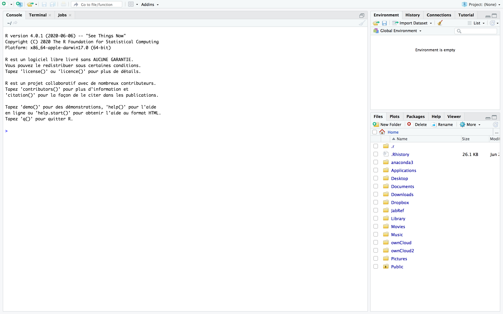
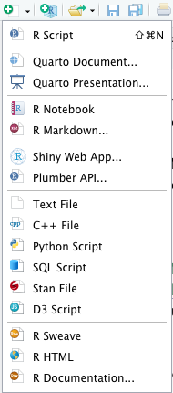

1 Démarrer avec R et découverte de RStudio
1.1 A propos de R 
Le logiciel R est développé depuis les années 90 par un groupe de volontaires de différents pays et par une large communauté d’utilisateurs. C’est un logiciel libre, publié sous licence GNU GPL et multiplateforme (fonctionne sur systèmes Linux, Mac OS X ou Windows). Il est facile à installer à partir de la page du CRAN (ou d’un site miroir); le CRAN contient toutes les ressources nécessaires à l’utilisateur de R, débutant ou expérimenté : fichiers d’installation, mises à jour, librairies, FAQ, newsletter, documentation… R fait partie des logiciels les plus utilisés de la communauté statistique académique et aussi de plus en plus dans les services R&D des entreprises en concurrence avec les logiciels commerciaux.
Dans sa structure, R est un langage de programmation d’une syntaxe voisine à celle du langage C et capable de manipuler des objets complexes sous forme de matrice, scalaire, vecteur, liste, facteur et aussi data frame. Il dispose également d’une très riche librairie de quasiment toutes les procédures et méthodes statistiques de la littérature. Plus précisément, toutes les recherches récentes sont d’abord développées et diffusées à l’aide de ce logiciel par la communauté scientifique.
Pour suivre cette série de tutoriels, vous devez commencer par installer R (version > 4.4.1) sur votre ordinateur. Pour cela, rendez-vous sur l’une des pages suivantes et suivez les instructions :
1.2 A propos de RStudio 
RStudio n’est pas qu’une interface graphique pour R, il s’agit d’un environnement de développement intégré, proposant des outils et facilite l’écriture de scripts et l’utilisation de R. La version gratuite de RStudio étant déjà très riche en fonctionnalités, elle est suffisante pour les enseignements.
1.2.1 Description des fenêtres de RStudio
Une fois R et RStudio installés sur votre machine, vous pouvez démarrer RStudio.
Au lancement de RStudio, l’écran est découpé en trois grandes zones.
La zone de gauche s’appelle la Console, on peut y lire au lancement la version de R que RStudio a chargé. Après le texte d’entrée, la ligne commence par > qui est l’invite de commande. RStudio est prêt à recevoir votre première commande. On peut se servir de R comme d’une calculatrice. Vous pouvez par exemple taper > 2+3 et taper Entrée. Le résultat apparait alors dans la console.
En haut à droite, on peut voir dans Environnement la liste des objets et fonctions créés au fur et à mesure du travail. On a également accès à l’historique des commandes dans History.
En bas à droite, on trouve plusieurs onglets :
- Files : permet de voir le contenu du répertoire de travail
- Plots : permet de visualiser les graphiques créés
- Packages : liste les packages installés pour les charger, mettre à jour, en installer d’autres (voir la section dédiée)
- Help : permet d’accéder à l’aide en ligne
Vous pouvez modifier la configuration des onglets de RStudio en allant dans Preferences -> Pane Layout.
1.2.2 Types de documents avec RStudio
En allant dans File -> New File ou en cliquant sur la flèche à côté de l’icone de New File (en haut à gauche), RStudio propose de nombreux types de document. Vous pouvez noter que l’on peut utiliser RStudio également pour faire du python, du C++, … Nous allons ici ne parler que de quelques types de fichiers que l’on utilisera par la suite. Lorsque l’on sélectionne un type de fichier, une quatrième fenêtre en haut à gauche de l’interface de RStudio s’ouvre.

Pour créer un script R, il suffit de sélectionner R Script. Ce script peut être enregistré à tout moment dans un fichier avec l’extension ” .R” (ex. monScript.R) dans le répertoire courant en cliquant sur l’icône de disquette ou par File->Save. Vous pouvez l’ouvrir à tout moment grâce au menu File –> Open file..., à l’icône dossier ou en double cliquant sur le fichier monScript.R. Il est également possible d’executer un script directement depuis la console grâce à la commande source("monScript.R").
Vous pouvez créer un document (rapport, slides, …) à l’aide de RMarkdown en sélectionnant R markdown .... En particulier, vous avez la possibilité d’éditer directement des documents au format pdf ou html (en incluant les commandes R, les sorties et les graphes). Le nouveau document créé sera sauvegardé avec l’extension ” .Rmd”. Lors de la création, il faut préciser le type de document final souhaité (document au format HTML ou PDF ou presentation, etc), ainsi que les informations du document (titre et auteur). On reviendra plus précisément sur les possibilités offertes par Rmarkdown et les commandes principales pour débuter la rédaction d’un rapport dans le tutoriel 4 de R avancé.
Vous pouvez aussi créer un document à l’aide de Quarto en sélectionnant Quarto Document et vous avez la possibilité de l’éditer au format pdf ou html également. Le nouveau document créé sera sauvegardé avec l’extension ” .qmd”. La syntaxe d’un document quarto est proche de celle en Rmarkdown, on y reviendra dans le tutoriel 4.
1.3 Environnement
1.3.1 Répertoire de travail
Pour pouvoir récupérer des données, maîtriser la sauvegarde des scripts, des résultats, … il est important de connaitre le répertoire de travail c’est-à-dire le répertoire sous lequel les divers résultats seront sauvegardés par défaut. Ce dernier s’obtient à l’aide de la commande getwd().
Pour changer de répertoire de travail, on peut utiliser la commande setwd() dans la Console. A noter que R ne reconnaît que le caractère “/” pour spécifier le chemin d’accès d’un répertoire (même sous Windows). On peut aussi passer par Session -> Set Working Directory -> Choose Directory.
1.3.2 L’aide de R
Il est normal de ne pas savoir (ou d’avoir oublié) quels sont les arguments d’une fonction, ou comment ils se nomment. On peut à tout moment faire appel à l’aide intégrée de R. On peut accéder à l’aide pour une fonction (ex pour la fonction plot) en passant le nom de la fonction dans help() (ex help(plot)) ou en utilisant le raccourci ?plot. Ces deux commandes permettent d’afficher une page de description (en anglais) de la fonction, ses paramètres, son résultat, d’exemples, … Ces pages d’aide contiennent de nombreuses informations mais elles ne sont pas toujours d’une lecture aisée. Dans RStudio, les pages d’aide en ligne s’ouvriront par défaut dans la zone en bas à droite, sous l’onglet Help. Un clic sur l’icône en forme de maison vous affichera la page d’accueil de l’aide. Vous pouvez aussi taper directement le nom de la fonction recherchée dans la zone de recherche dans l’onglet Help.
1.3.3 Les librairies pour R
R est un logiciel libre, il s’enrichit grâce au développement de packages par la communauté. La plupart des extensions sont développées et maintenues par la communauté des utilisateurs de R, et diffusées via un réseau de serveurs nommé CRAN (Comprehensive R Archive Network). On peut également trouver des packages R dédiés à l’étude des données génomiques à haut-débit sur Bioconductor, des packages déposés sur github, …
Pour installer une librairie disponible sur le CRAN, vous avez plusieurs manières de le faire :
- passer par le menu
Tools-> Install Packages ...et sélectionner un site miroir du CRAN - Aller dans l’onglet Packages dans la fenêtre en bas à droite et cliquer sur Install.
- utiliser la fonction
install.packages()directement dans la console - télécharger l’archive .zip correspondant au package et utiliser ensuite
Tools-> Install Packages ..., choisirPackage Archive File (.tar,.zip)dans Install form.
- installer directement dans un terminal (sans utiliser RStudio) avec la commande
R CMD INSTALL package-name.tar.gz.
Attention, vous devez posséder une version de R qui permette l’installation du package désiré et certains packages nécessitent l’installation préalable d’autres packages.
Pour l’installation d’un package de Bioconductor, il faut d’abord installer BiocManager install.packages("BiocManager") puis on utilise la commande BiocManager::install().
Pour installer une librairie hébergée sur un dépot github, il faut d’abord installer le package devtools install.packages("devtools"), charger cette librairie library(devtools) puis utiliser la commande install_github().
Toutes les librairies ne sont pas chargées automatiquement au lancement de R. Pour charger une librairie, on utilise la commande library() et les commandes search() ou searchpaths() pour connaître la liste des librairies chargées. Vous pouvez utiliser la commande .libPaths() pour connaitre les chemins vers lesquels pointe R pour trouver des librairies installées. Il faut aussi parfois mettre à jour les librairies. Pour cela, vous pouvez aller dans l’onglet Packages dans la fenêtre en bas à droite et cliquer sur l’icône Update, ou en utilisant la commande update.packages(...).
1.3.4 Exercice
- Installer la dernière version de R et RStudio
- Installer les packages suivants qui nous serviront par la suite : tidyverse, FactoMineR, mixOmics, corrplot, gridExtra, plotly, questionr
- Charger la librairie ggplot2, la librairie tidyverse. Y-a-t-il un lien entre les deux ?
- Accéder à la documentation de tidyverse, de la fonction rnorm.
Question 1 : Voici pour les trois premiers, faire de même pour les autres.
install.packages("FactoMineR")
install.packages("tidyverse")
install.packages("BiocManager")
BiocManager::install("mixOmics")Question 2 :
library(ggplot2)
library(tidyverse)Le package tidyverse englobe plusieurs librairies dont ggplot2. On reviendra sur ce package tidyverse dans le tutoriel 4 de R avancé.
Question 3 :
help(tidyverse)
? tidyverse
help(rnorm)
? rnorm